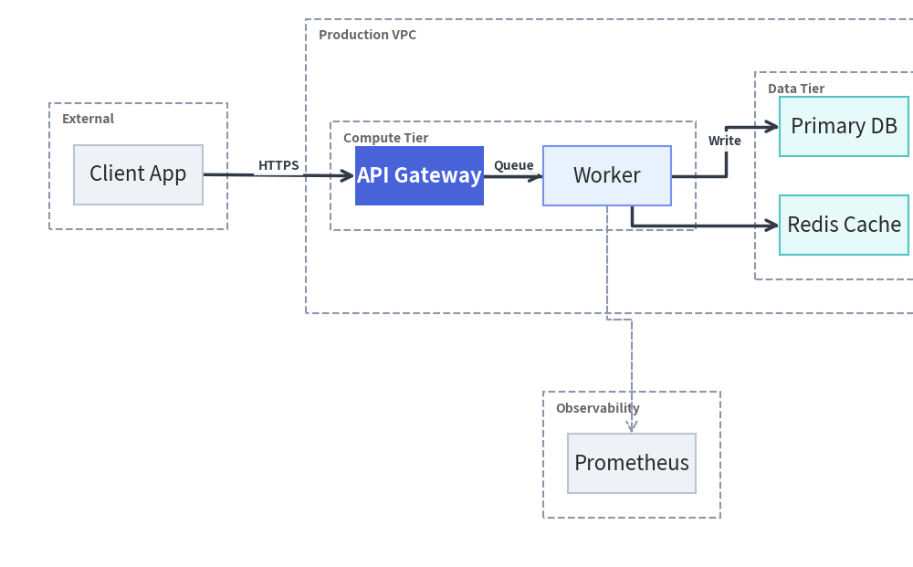
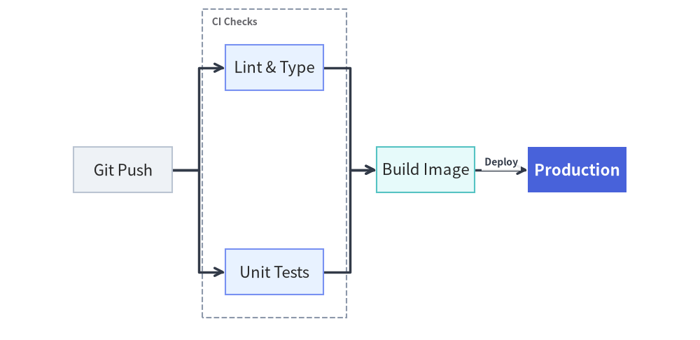
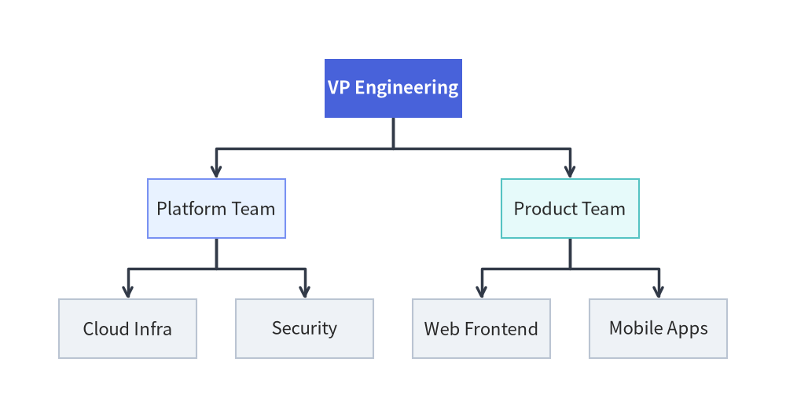
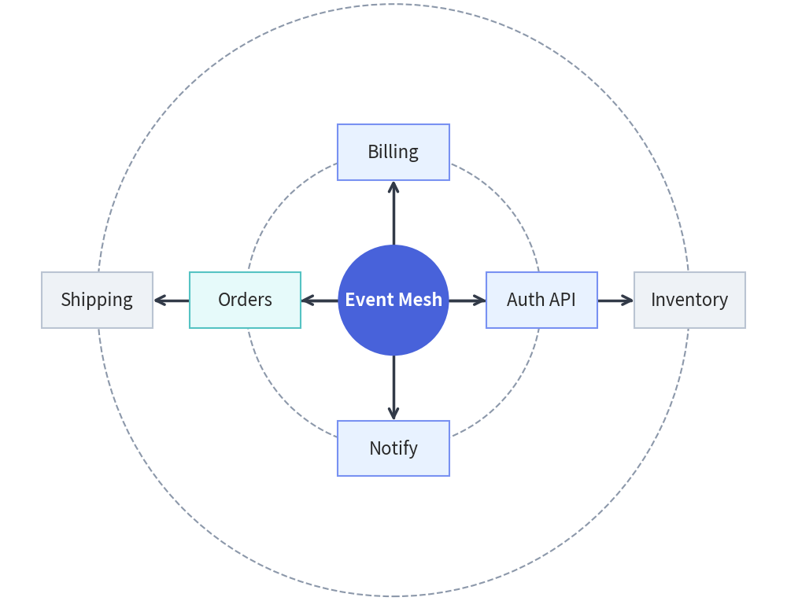
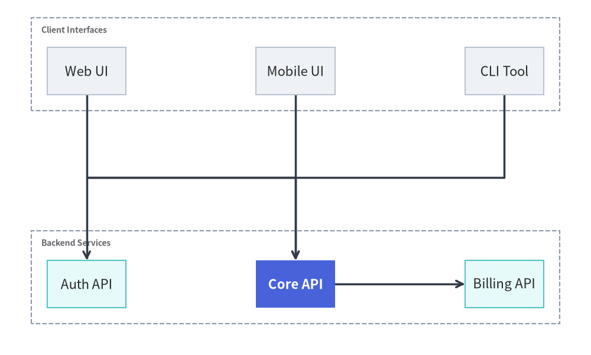
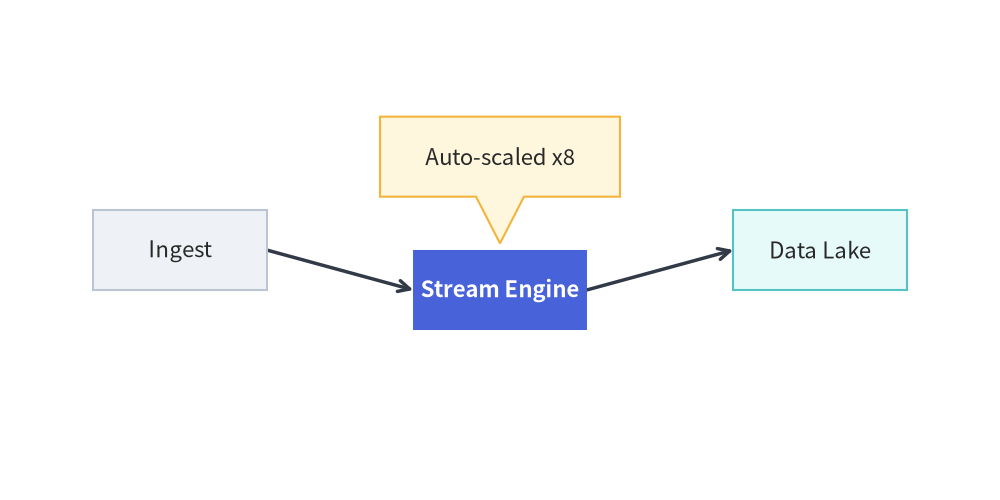

Auto-Layout Graphs (drawlib.graph)
drawlib.graph provides a declarative graph layout engine with five specialized layout solvers (ArchitectureGraph, LayerGraph, TreeGraph, RadialGraph, and GridGraph).
Unlike black-box layout engines (such as Graphviz or Mermaid) that make it impossible to tweak an awkward node or attach custom annotations, drawlib.graph lets you:
- Render Declaratively (
g.draw()): Declare nodes, edges, and nested clusters and let the solver compute coordinates and orthogonal routes automatically. - Calculate, Tweak, and Overlay (
g.calc()+layout.offset()): Compute the layout first, nudge specific nodes or clusters, and overlay customdrawlib.shapesat exact computed coordinates (layout.nodes["db"].x). - Export to Standalone Primitives (
g.export_code()): Generate clean, self-contained Python code using standarddrawlib.shapesanddrawlib.lineswith all computed coordinates baked in.
1. Choosing the Right Graph Solver
| Solver Class | Layout Algorithm | Primary Use Case | Key Builder Methods |
|---|---|---|---|
ArchitectureGraph |
2-Level Macro/Micro Packing + 5-Zone Compass | Cloud VPCs, nested subnets, multi-zone microservices | .group(), .cluster(parent=..., pos=...) |
LayerGraph |
Sugiyama Hierarchical DAG | CI/CD pipelines, dataflows, layered dependency graphs | .tier(name, nodes, layer=...) |
TreeGraph |
Reingold-Tilford / Buchheim Compact Tree | Org charts, taxonomies, ASTs, decision trees | .child(parent, child_id, ...) |
RadialGraph |
Concentric BFS Rings & Angular Sectors | Hub-and-spoke topologies, ecosystem rings | .spoke(parent, spoke_id, ring=...) |
GridGraph |
2D Matrix & Smart Channel Routing | Service catalogs, state matrices, tabular networks | .cell(), .cluster_row(), .cluster_column() |
2. Common Graph Builder API (BaseGraph)
All five solvers inherit from BaseGraph and share a fluent builder interface:
from drawlib.graph import (
ArchitectureGraph,
GridGraph,
LayerGraph,
RadialGraph,
TreeGraph,
)
Core Declaration & Execution Methods
g.node(id, label=None, *, style=None, text_style=None, shape="rectangle", icon=None, width=None, height=None, ..., show: bool = True) -> Node- Supported
shapevalues:"rectangle"(default; corner radius controlled viastyle.shape_r),"circle". - Setting
show=Falsekeeps the node in the layout calculation (calc()) so coordinates remain fixed, while skipping the node and its connected edges during rendering (draw()).
- Supported
g.edge(src, dst, label=None, *, style=None, text_style=None, arrow_head="->", line_style=None, show: bool = True) -> Edge- Connects
srctodst(automatically creating undeclared nodes with default styling). Automatically hidden during rendering ifshow=Falseor if either endpoint node hasshow=False.
- Connects
g.cluster(id, nodes, label=None, *, style=None, text_style=None, padding=4.0, parent=None, order=None, pos=None, show: bool = True) -> Cluster- Encloses
nodesinside a labeled boundary container (defaults toStyles.MutedDashed). Supports nesting viaparent="<cluster_id>".
- Encloses
g.draw(xy=(0.0, 0.0), *, width=None, height=None, margin=10.0, scale: float = 1.0) -> GraphLayoutandlayout.draw(xy=(0.0, 0.0), *, scale: float = 1.0) -> None- Renders all visible clusters, edges, and nodes onto the active canvas, translated by
xyand proportionally scaled byscale.
- Renders all visible clusters, edges, and nodes onto the active canvas, translated by
3. Cloud & System Topologies (ArchitectureGraph)
ArchitectureGraph uses a two-level macro/micro algorithm tailored for cloud infrastructure:
- Nested Containers: Place subnets or tiers inside a parent VPC (
parent="vpc",order=1). - 5-Zone Compass Placement: Pin external clients or monitoring clusters to
"left","right","top","bottom", or"center"viapos=....
from drawlib.canvas import save, setup
from drawlib.graph import ArchitectureGraph
from drawlib.styles import Styles
setup(width=185, height=115)
g = ArchitectureGraph(direction="LR", default_node_width=26.0)
# External client zone pinned to the left
g.cluster("clients", ["client"], label="External", pos="left", padding=5.0)
g.node("client", "Client App", style=Styles.Neutral)
# Cloud VPC with nested Compute and Data tiers in the center
g.group("vpc", "Production VPC", pos="center", padding=5.0)
g.cluster("app_tier", ["api", "worker"], label="Compute Tier", parent="vpc", order=1, padding=5.0)
g.cluster("data_tier", ["db", "cache"], label="Data Tier", parent="vpc", order=2, padding=5.0)
# Hero focal node in PrimaryFlat; supporting nodes in calm Neutral / Tinted-Neutral cards
g.node("api", "API Gateway", style=Styles.PrimaryFlat, text_style=Styles.WhiteBold)
g.node("worker", "Worker", style=Styles.PrimaryNeutral)
g.node("db", "Primary DB", style=Styles.SecondaryNeutral)
g.node("cache", "Redis Cache", style=Styles.SecondaryNeutral)
# Observability cluster pinned to the bottom
g.cluster("obs", ["metrics"], label="Observability", pos="bottom", padding=5.0)
g.node("metrics", "Prometheus", style=Styles.Neutral)
g.edge("client", "api", "HTTPS")
g.edge("api", "worker", "Queue")
g.edge("api", "cache", "Read")
g.edge("worker", "db", "Write")
g.edge("worker", "metrics", style=Styles.MutedDashed)
g.draw(margin=10)
save()

4. Layered DAGs & Pipelines (LayerGraph)
LayerGraph implements a Sugiyama-style hierarchical DAG solver (cycle removal, longest-path rank assignment, barycenter crossing reduction, and orthogonal routing). Use .tier(name, nodes, layer=...) to pin nodes to a specific rank:
from drawlib.canvas import save, setup
from drawlib.graph import LayerGraph
from drawlib.styles import Styles
setup(width=185, height=90)
g = LayerGraph(direction="LR", rank_sep=14.0, default_node_width=26.0)
g.node("git", "Git Push", style=Styles.Neutral)
g.node("lint", "Lint & Type", style=Styles.PrimaryNeutral)
g.node("unit", "Unit Tests", style=Styles.PrimaryNeutral)
g.node("build", "Build Image", style=Styles.SecondaryNeutral)
g.node("prod", "Production", style=Styles.PrimaryFlat, text_style=Styles.WhiteBold)
g.tier("ci", ["lint", "unit"], layer=1)
g.cluster("ci_box", ["lint", "unit"], label="CI Checks", padding=6.0)
g.edge("git", "lint")
g.edge("git", "unit")
g.edge("lint", "build")
g.edge("unit", "build")
g.edge("build", "prod", "Deploy")
g.draw(margin=12)
save()

5. Hierarchies & Trees (TreeGraph)
TreeGraph computes proportional subtree widths so sibling branches never collide and parent nodes remain centered over their children:
from drawlib.canvas import save, setup
from drawlib.graph import TreeGraph
from drawlib.styles import Styles
setup(width=160, height=85)
g = TreeGraph(root="vp", direction="TB", default_node_width=28.0)
g.node("vp", "VP Engineering", style=Styles.PrimaryFlat, text_style=Styles.WhiteBold)
g.child("vp", "plat", "Platform Team", style=Styles.PrimaryNeutral)
g.child("vp", "prod", "Product Team", style=Styles.SecondaryNeutral)
g.child("plat", "infra", "Cloud Infra", style=Styles.Neutral)
g.child("plat", "sec", "Security", style=Styles.Neutral)
g.child("prod", "web", "Web Frontend", style=Styles.Neutral)
g.child("prod", "mob", "Mobile Apps", style=Styles.Neutral)
g.draw(margin=12)
save()

6. Hub-and-Spoke Topologies (RadialGraph)
RadialGraph arranges nodes on concentric rings around a central hub (ring=0, 1, 2, ...) and optionally renders dashed ring guide circles (draw_ring_guides=True):
from drawlib.canvas import save, setup
from drawlib.graph import RadialGraph
from drawlib.styles import Styles
setup(width=170, height=130)
g = RadialGraph(hub="core", draw_ring_guides=True, default_node_width=24.0)
g.node("core", "Event Mesh", shape="circle", width=24.0, height=24.0, style=Styles.PrimaryFlat, text_style=Styles.WhiteBold)
g.spoke("core", "auth", "Auth API", style=Styles.PrimaryNeutral)
g.spoke("core", "billing", "Billing", style=Styles.PrimaryNeutral)
g.spoke("core", "orders", "Orders", style=Styles.SecondaryNeutral)
g.spoke("core", "notify", "Notify", style=Styles.PrimaryNeutral)
g.spoke("orders", "inv", "Inventory", ring=2, style=Styles.Neutral)
g.spoke("orders", "ship", "Shipping", ring=2, style=Styles.Neutral)
g.draw(margin=18)
save()

7. Matrix Layouts (GridGraph)
GridGraph places nodes into a 2D (row, col) matrix and routes non-adjacent connections through inter-row and inter-column channels:
from drawlib.canvas import save, setup
from drawlib.graph import GridGraph
from drawlib.styles import Styles
setup(width=150, height=90)
g = GridGraph(columns=3)
g.cell("fe_web", row=0, col=0, label="Web UI", style=Styles.Neutral)
g.cell("fe_mob", row=0, col=1, label="Mobile UI", style=Styles.Neutral)
g.cell("fe_cli", row=0, col=2, label="CLI Tool", style=Styles.Neutral)
g.cell("svc_auth", row=1, col=0, label="Auth API", style=Styles.SecondaryNeutral)
g.cell("svc_core", row=1, col=1, label="Core API", style=Styles.PrimaryFlat, text_style=Styles.WhiteBold)
g.cell("svc_pay", row=1, col=2, label="Billing API", style=Styles.SecondaryNeutral)
g.cluster_row(0, "row_fe", label="Client Interfaces")
g.cluster_row(1, "row_be", label="Backend Services")
g.edge("fe_web", "svc_core")
g.edge("fe_mob", "svc_core")
g.edge("fe_cli", "svc_auth")
g.edge("svc_core", "svc_pay")
g.draw(margin=12)
save()

8. Post-Layout Adjustment (calc() + offset()) & Code Export (export_code())
Fine-Tuning with calc() and offset()
Call layout = g.calc() to inspect or adjust computed positions before rendering:
from drawlib.canvas import save, setup
from drawlib.graph import LayerGraph
from drawlib.shapes import bubblespeech
from drawlib.styles import Styles
setup(width=150, height=75)
g = LayerGraph(direction="LR", default_node_width=26.0)
g.node("ingest", "Ingest", style=Styles.Neutral)
g.node("process", "Stream Engine", style=Styles.PrimaryFlat, text_style=Styles.WhiteBold)
g.node("store", "Data Lake", style=Styles.SecondaryNeutral)
g.edge("ingest", "process")
g.edge("process", "store")
# 1. Compute layout without drawing
layout = g.calc(margin=14)
# 2. Shift a node or cluster and draw
layout.offset("process", dy=-6.0)
layout.draw()
# 3. Attach a custom primitive using computed node coordinates
proc = layout.nodes["process"]
bubblespeech(
(proc.x - 18, proc.y + 14),
width=36,
height=12,
tail_edge="bottom",
tail_start_ratio=0.4,
tail_end_ratio=0.6,
tail_vertex_xy=(proc.x, proc.y + proc.height / 2 + 1),
style=Styles.WarningNeutral,
text="Auto-scaled x8",
)
save()

Scaffolding Standalone Primitive Code (export_code())
To convert any graph layout into standalone drawlib.shapes and drawlib.lines Python code with explicit numeric coordinates:
print(g.export_code(width=160, height=90))